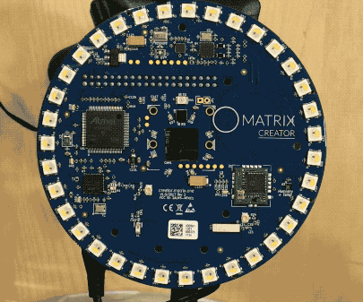

Installing MOS
Prerequisites
Make sure you have setup your MATRIX Creator or MATRIX Voice before continuing.
Software
Computer Installation & Account Registration
We recommend running the following commands on your Desktop/Laptop and not on your Raspberry Pi.
MOS contains a CLI (Command Line Interface) tool for controlling and managing your MATRIX devices. To install the tool, execute the following command in your personal computer's terminal.
npm install -g matrix-cli
Once installed, the CLI tool needs to be configured by registering and then logging into a MATRIX Labs account.
matrix register
matrix login
With an account logged into the CLI tool, you can now register your MATRIX device. This will prompt you to enter a name and description for the device.
matrix register device
After the device is created, a set of unique login credentials will be generated for you. Save these credentials because they are necessary to link your MATRIX Labs account to your MATRIX device. Below is an example of the generated credentials.
export MATRIX_DEVICE_ID=dc7a1a71be2d
export MATRIX_DEVICE_SECRET=08629018e9d77h15i5n0t4r3alz0f06cd4f7e5544272b
Raspberry Pi Setup
Access the terminal of your Raspberry Pi via an SSH-session or connect a screen, mouse, and keyboard. Then run the following commands to go into your home directory and install MOS on the Raspberry Pi. A reboot will occur when the installation is finished.
cd ~/
curl https://raw.githubusercontent.com/matrix-io/matrix-creator-quickstart/master/install.sh | sh
Linking Device To MATRIX Labs Account
To properly link your MATRIX device to your MATRIX Labs account, you need to create a file named .envrc in the home directory of the Raspberry Pi and then populate it with the device credentials you saved earlier. To create the .envrc file and add the device credentials, use the nano command below and paste your device credentials within the terminal editor. When you’re done, press Ctrl+X.
nano ~/.envrc
With the .envrc file created, you need to make the credentials within visible to the shell by running the command below. MOS will then be able to read it and properly register your MATRIX device.
source ~/.envrc
Start MOS with the following command!
node ~/matrix-os/index.js
Starting MOS on boot is not yet implemented.
Check If Everything Works
Open the terminal on your Desktop/Laptop and type the following command with the device name or ID. This selects the MATRIX device you want to interact with.
matrix use YOUR_DEVICE_NAME_OR_ID
Once your device is selected, run these commands to verify that everything has installed properly. This installs and runs the HelloWorld app from the MATRIX App Store.
matrix install HelloWorld
matrix start HelloWorld

You should now see a rainbow LED sequence, like the one above, on your MATRIX Device.
Use the following command to stop the app.
matrix stop HelloWorld
When an app is stopped, the LEDs will keep the last color they were set to until set to a different color.
Next Steps
Now that everything is properly installed, learn how to create your own MATRIX app here.